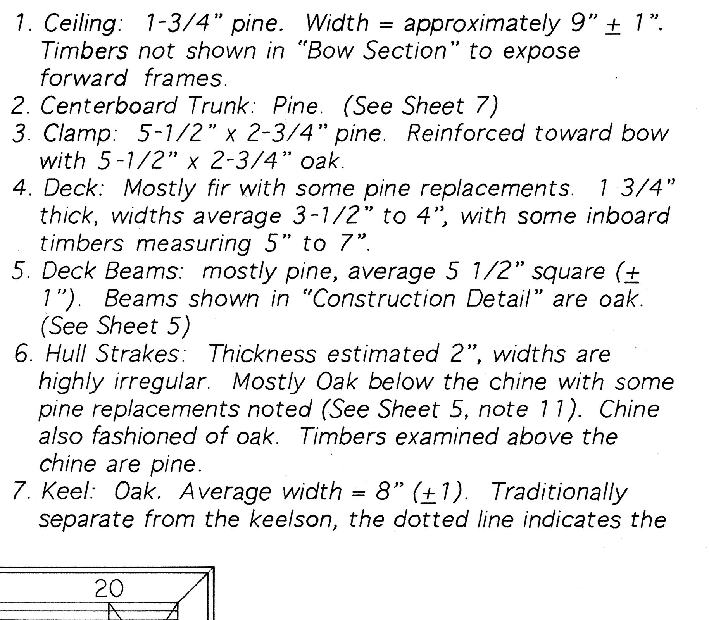

Original scan pixels: [7306, 5669, 10402, 8378]; source SHA-256: 86e6b7b3f2a1ae9b9b49ddcfcb6a01abc18f0712cd996af107e54c319cec421e.
Native lossless view · Raw OCR · Word coordinates/confidence · Manifest

Ceiling: 1-3/4-inch pine; approximately 9 inches wide plus/minus 1 inch. Not shown in bow section to expose forward frames.
Centerboard trunk: pine; see sheet 7.
Clamp: 5-1/2 x 2-3/4-inch pine, reinforced forward with the same section in oak.
Deck: mostly fir with pine replacements, 1-3/4 inches thick; widths 3-1/2 to 4 inches, some inboard 5 to 7 inches.
Deck beams mostly pine, average 5-1/2-inch square plus/minus 1 inch. Beams in structural conception detail are oak. Sheet 5 gives the more specific schedule.
Hull strakes: estimated 2 inches thick, highly irregular widths; mostly oak below chine with some pine replacements (sheet 5 note 11). Chine oak; examined above-chine timbers pine.
Keel: oak, average width 8 inches plus/minus 1 inch. Traditionally separate from keelson; dotted line indicates probable seam below rabbet for more watertight construction.
1. Ceiling: 1-374” pine. Width = approximately 9” + 1”. Timbers not shown in “Bow Section” to expose forward frames. : 2. Centerboard Trunk: Pine. (See Sheet 7) 3. Clamp: 5-172” x 2-3/4” pine. Reinforced toward bow with 5-1/2” x 2-3/4” oak. 4. Deck: Mostly fir with some pine replacements. 1 3/4” thick, widths average 3-1/2” to 4”, with some inboard — timbers measuring 5” to 7”. 5. Deck Beams: mostly pine, average 5 1/2” square (+ 1”). Beams shown in “Construction Detail” are oak. (See Sheet 5) 6. Hull Strakes: Thickness estimated 2”, widths are — highly irregular. Mostly Oak below the chine with some pine replacements noted (See Sheet 5, note 17). Chine also fashioned of oak. Timbers examined above the chine are pine. | /. Keel: Oak. Average width = 8” (+1). Traditionally separate from the keelson, the dotted line indicates the